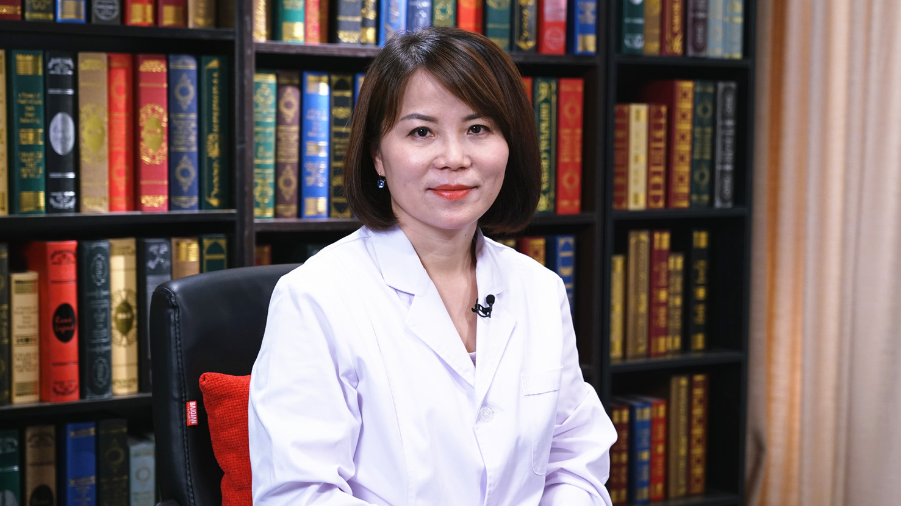

2.30 儿童口腔常见问题¶
汪俊 主任医师¶

上海交通大学医学院附属第九人民医院口腔医学院儿童口腔科 主任 主任医师 博士生导师；
中华口腔医学会儿童口腔专业委员会副主任委员；上海市口腔医学会儿童口腔专业委员会前任主任委员；上海市口腔医学会理事；上海儿童口腔专科医师规范化培训基地主任 专家组组长。
主要成就： 发表SCI及中文核心学术论文60余篇；参编《儿童口腔医学》及多部专著；主审《儿童牙科诊疗行为管理》；获上海科技成果奖。
专业特长： 临床擅长儿童龋病、牙髓根尖周病、牙外伤诊治及儿童错颌畸形早期矫治。研究方向为儿童牙外伤、牙齿发育异常、儿童牙科行为管理及牙髓再生。
乳牙、恒牙是如何替换的？替换一般需要多长时间？¶
我给大家看一下这个模型，大家都知道我们人一生当中有两副牙齿，在一开始是一副乳牙，到了6岁左右一直到12岁，它陆陆续续地被恒牙所替换了，大家能看到模型当中，在每一颗乳牙的下方，大家都能看到一个小小的牙齿一样的正在发育中的恒牙，我们叫恒牙胚。
恒牙胚有的是在出生之前就有了，而有些其实要到出生以后才陆陆续续出来的，所以大家从这个模型当中就能看到，其实每个乳牙下方的恒牙胚，大小、位置都是不一样的，所以乳恒牙替换是要持续一段时间的。所以每个乳恒牙替换的时间也是有所差异的。
随着小朋友年龄的增长，恒牙胚就会慢慢的生长，随着它的生长，它就会向口腔方向移动。
大家再看下这个，牙胚就慢慢的变大了，它就往上移动了，与之相伴随的上方的乳牙的牙根，它就会发生正常的生理性的吸收，吸收的益处是什么？它可以为恒牙的萌出打开一个通道，而且随着恒牙的发育，向上的移动，乳牙牙根吸收，乳牙的牙根就越来越短。
大家知道乳牙，包括恒牙，都是靠牙根然后长到骨头里去的，它才能牢牢地位于我们口腔当中，如果牙根变短了的话，那么它就会自行脱落，如果是正常的乳恒牙替换过程当中能脱落的话，大家能发现缺牙导致的一个间隙，很快就会被下方的恒牙所利用了。
（采访）就是乳牙脱落以后，恒牙长出的时期一般正常的情况是多久呢？
其实没有一个非常明确的界限有的时候，甚至都已经能看到恒牙就在下方了，所以可能牙齿一掉下来，或者一脱落你就能看到恒牙了，而有一些可能还要过一个月、两个月再长出来，每个人的时间，其实每个牙齿它是有所差异的。
儿童蛀牙是如何导致乳牙脱落的？¶
蛀牙如果处理的不及时的话，它会不断进展，大家都听到过牙神经蛀牙蛀到一定的阶段，它就会使我们的神经发生炎症然后坏死，这个时候炎症就顺着我们的牙根，牙根跟骨头之间它是有个孔连接的，那么感染的物质就会通过我们叫根尖孔的位置就到达了骨头里面。
那么感染就扩散到牙槽骨里去了，这会引起骨头广泛性的破坏，同时也可能会引起牙根炎症性的吸收，这两种情况都会导致乳牙过早脱落，有的时候可能是自己自行脱落的，有的时候是我们医生出于感染控制的目的，因为坏牙没有办法保留了，所以我们要将它进行拔除。
乳牙过早脱落导致的缺牙空隙，为什么要高度重视？¶
大家都知道我们同样看到牙齿，大家都能看到我们牙齿一颗一颗地排在口腔当中的，一个个的，如果说当中有个牙齿没有了，其实它相互之间就失去了一个支撑。
我们打个比喻，可能不是特别恰当，大家家里都有书架，你从书架当中抽走一本书以后，旁边的书是不是就往当中间倒。同样牙齿也是的，如果说这个牙齿过早脱落了，而底下的恒牙又没有很快出来的话，时间比较久，牙齿当然它不会像书那样很快倒下来，但是它就会慢慢的向缺失的牙齿位置移动。那么这就会导致什么？
乳牙除了可以咀嚼之外，包括发音，包括美观这些作用之外，它还有一个很重要的作用是什么？它是可以为我们下方的恒牙的萌出预留空间的，就预留位置的，如果这个位置因为乳牙早失，导致它间隙变小以后，那么恒牙的萌出就出现了问题，它就没有位置长出来。所以这个时候在乳牙脱落以后，要尽可能的去进行间隙的保持，这是对于有恒牙胚的情况。
先天没有恒牙胚，乳牙脱落后必须装义齿吗？¶
下方没有恒牙胚，牙胚是先天性的缺失，碰到这种情况我们又该怎么办？他需不需要种牙，还是说以后我们做烤瓷桥，还是把间隙关闭，我们要分析多种因素。
首先这个位置留还是不留，需不需要留，我们要考虑什么？本身他的牙齿总的所需要的空间跟现在小朋友口腔当中骨头能够提供的空间，它们之间的一个差值，能不能容纳它，来决定需不需要保留这个位置，如果分析下来它需要保留的话，我们可以说为了后期需要做，刚才讲的可能做种植牙也好，以后做烤瓷桥也好，这时候我们要给它留位置，这个时候我们同样要进行间隙的保持。
但是如果我们分析下来发现，本身牙齿就很拥挤了，本身位置就不够了，可能后期需要进行拔牙矫正的时候，这个时候我们就可以选择什么方式？就让间隙有个自行关闭，所以这个是要根据具体的情况来分析的。
（采访）就是可能有一些情况它需要间隙的保持，有一些需要间隙的关闭？
对。
乳牙发黄的原因是什么？会导致恒牙也发黄吗？¶
（采访）乳牙很黄，将来再长出来的恒牙还会这样吗？
这个是要取决于乳牙发黄是什么原因引起的，可能会影响，也可能不影响。大家看一下这个模型，因为它是透明能看得见，我们牙齿分为几个部分，我们口腔当中能看到的叫牙冠，那么埋在骨头里大家看到这叫牙根，牙冠和牙根交界的地方我们称之为牙颈，但是我们能看到的牙齿的颜色，它主要是什么？就是牙冠的颜色。
牙冠它是由几部分组成的，它最里面的是什么？大家通常俗称的牙神经，但是大家要知道它并不是只有神经，它里面有血管，有细胞，有纤维结缔组织等等这一些，正常情况下它是呈淡粉色。
它位于牙齿里面的腔隙，它的外围包括了两层，我们能看到硬组织，这个硬组织包括两层，牙神经外面那一层叫牙本质，牙本质是淡黄色的，而牙本质的外层叫牙釉质，牙釉质和牙本质类似的，它们都属于牙体的硬组织。
但是牙釉质是人体当中矿化程度最高的、最硬的一个组织，它通常呈透明的白色，而且它矿化程度越高，它越透明，如果说它乳牙越是透明的话，它里面牙本质本身的淡黄色就越能明显的呈现出来。
而对于乳牙跟恒牙相比，它的钙化程度相对来说是比较低的，乳牙的钙化程度比较低，因此它的黄色的呈现就没有那么明显，所以乳牙它通常是呈青白色的，或者乳白色，呈白色的，在什么情况下它可能会出现变黄？
第一个，可能就是外源性的因素，色素附着在牙齿的表面了，比如说我们吃进去的食物，我们喝进去的饮料，这些色素可能在牙面沉积，为什么能沉积上去？我常常跟家长打一个比方，毛玻璃和光玻璃，如果用墨汁把它泼上去，毛玻璃上会留下更多的印记，但是的光玻璃上可能什么也留不下，这是为什么？
因为毛玻璃上有很多的小微孔，所以它能够吸附这些色素上去，牙齿为什么会有色素的沉着？其实跟这个有类似的地方。如果我们口腔环境不好，如果有的小朋友可能他蛀牙了，他经常会得蛀牙，但有的小朋友他可能只是表面矿物质的脱矿，它表面就有很多的小微孔出现。
我们吃进去的这些色素可能就比较容易沉积到这些我们肉眼看不到的微孔当中去，那么就形成色素的沉着了，所以这提示什么？提示我们的口腔环境是比较酸性的，要提醒家长要进行很好的口腔的清洁，这是对于外源性的。
这种外源性的色素，其实我们说通过适当的清洁，包括我们口腔的卫生措施以后，它是可以停止的，可以改善的，那么这种是不会传给恒牙的，这是第一种情况。
第二种情况是什么？就是蛀牙，蛀牙分为两种，并不是说蛀牙它一直是进展，我们叫活动期和静止期，有些蛀牙它一开始呈现活动期，那么它进展的速度会比较快，这个时候破坏的组织会呈什么颜色？呈那种黄色，也是呈现黄色的。
所以很多家长会讲孩子牙齿就变黄了，还有的甚至说它一长出来黄了，是因为乳牙已经蛀了，呈现这种黄色。对于新长的恒牙做个很好的保护，不要让它蛀下去，这个也是不会传给恒牙的。
但是当中有一个特殊的情况是什么？如果说蛀牙没有得到及时的治疗，那么我们刚才讲，蛀牙蛀到后来它可能累及到神经了，细菌到神经里面去了，神经会坏死，神经坏死以后感染，通过牙根就到达牙槽骨。
乳牙的下方就是恒牙胚，如果说感染长期持续的存在，它可能对正在形成的恒牙的牙胚发育产生影响，这个时候它在我们的恒牙的发育上，可能会出现一些黄色的斑点，这个是有可能的，这是比较特殊的情况。
否则的话，如果单纯的蛀牙，如果进行及时的治疗，它是不会影响到恒牙的。
那么第三种情况发黄是因为什么？它可能本身的发育发生了异常，这个常常与全身性的因素有关系，甚至有些是遗传性的，这个有可能会传给以后新萌出的恒牙。
（采访）所以牙齿发黄它还有非常多的因素?
对。
儿童夜磨牙的原因是什么？儿童夜磨牙该怎么办？¶
（采访）儿童夜磨牙的原因是什么？
其实到目前为止，关于不管是儿童夜磨牙，还是成人的夜磨牙，它的病因都是不明确的，不明确的原因是什么？影响因素太多了，目前可能与之相关的因素有哪一些？首先第一个就是可能跟他的心理因素和情绪有关。
如果小朋友处于情绪很亢奋的状态，尤其在睡前的时候处于很亢奋状态，因为小朋友睡前玩得很高兴，或者说他这段时间学习压力很大，或者由于家里有什么事情让他觉得很焦虑，这个时候就有可能诱发他的夜磨牙，所以说这是第一个相关的因素。
第二个是什么，可能跟睡眠障碍有关，小朋友如果在他的生长发育过程当中，出现了扁桃体的过大或者腺样体过大，或者说现在越来越多的小朋友有过敏性的鼻炎，这些都会影响他呼吸道的通畅，常常会导致他张口的呼吸，
而且严重的会影响什么？严重的会导致他睡眠障碍，就睡眠暂停，儿童的SAS（睡眠呼吸暂停综合征），这也是一个相关的因素，就是为了这个可能要改变他的体位，所以他肌肉会紧张，也会导致他的夜磨牙。
第三个相关因素可能是什么？是遗传因素，有资料显示如果父母有夜磨牙的，小朋友夜磨牙的发生率可能就比较高一些。
还有一种观点认为夜磨牙跟咬合紊乱有关，这个可能有一段时间相当的盛行，但是其实对于这个观点，目前其实它并没有一个定论，而且有很多学者认为可能是因为夜磨牙导致了咬合紊乱，而不是咬合紊乱导致夜磨牙，所以就像是先有鸡，还是先有蛋这个问题，其实并不明确，这是跟这些因素相关的。当然了，除此之外可能还有很多的因素，我们现在并不明了。
（采访）如果出现夜磨牙有什么解决的办法吗？
其实对于儿童的夜磨牙，我们说比较轻度的，其实我们没有说一定要去治疗，为什么说不一定要治疗，首先因为夜磨牙的发生跟年龄是有一定关系的，随着年龄的增长，夜磨牙的发生率是呈线性下降的。
有的小朋友可能在他很年幼的时候，或者在早期的时候他有夜磨牙，但是随着他年龄慢慢的增长，那么他的夜磨牙的发生率就下降了，他就没有夜磨牙了。所以对于这类小朋友我们可以再去观察。
但是在这个过程当中我们需要注意什么？我们前面提到过，跟他的精神因素可能是很相关的，所以这个时候我们作为家长，首先尤其对于小小的朋友，睡前不要让他过于兴奋，不要玩那种很刺激的游戏，或者看那种很紧张的电视等等。
对这种稍微大的小朋友，可能事事要关心他的一些情绪反应，然后对他进行多一些的陪伴，缓解他的焦虑的情绪，可能也是有帮助的，这是对于比较轻度的。
但是如果说磨耗比较明显了，我们能看到牙齿有明显的磨耗的痕迹，这个时候口腔的治疗是什么？可以去医院里面做夜磨牙的颌垫，这个也可以帮他缓解一些症状。
除了磨牙垫之外，我们还可以做什么？我们说其实夜磨牙的发生，它主要是我们的咬肌，还有聂肌的紧张，所以家长可以每天给他按摩咬肌和颞肌的地方，让他肌张力下降也会好一些。
第三个，我们刚才讲的病因当中还有一个很重要的，就是睡眠的障碍，跟呼吸道阻塞相关的，所以如果说出现这些问题的话，他有扁桃体、腺样体的肥大，有张口呼吸，甚至说出现了睡眠障碍，就是呼吸暂停的时候，就需要家长及时带小朋友去就诊，解决这方面的问题。其实这个还是蛮重要的。
（采访）您说的要戴咬合垫的时候，它是什么样的？垫着防止牙磨损吗？
对，我今天没有实物，实际上是这样的，我们是要去取一个模型，我们一般都是定做的，定做模型以后，我们用真空牙模机，然后顺着你牙齿的形态上面做一个材料，颌垫垫在牙齿上面，跟他的牙列的形态是一致的，它的固位性相对会比较好。
（采访）家长可能需要给孩子精神上放松一些，然后包括平时也按摩咬肌，让他身体上也放松一些，可能更好地改善夜磨牙，也可能他随着年龄的增长夜磨牙可能就没有了？
对。
乳牙牙缝大是怎么回事？需要治疗吗？¶
（采访）乳牙牙缝大需要治疗吗？
应该说绝大多数情况下它是正常的，是不需要治疗的，在大多数小朋友，应该说在正常情况下，小朋友的乳牙当中都会出现一些缝隙，有一些是出生后牙齿出来以后，牙列形成以后它就会出现的。
而有一些是随着小朋友的颌骨的发育、牙胚的发育，导致我们牙槽骨和颌骨慢慢的增大了，而大家知道我们乳牙长出来以后，它的大小是不变的。骨头大了，而牙齿的大小是不变的，相对它提供的间隙就多了，所以自然而然的牙齿跟牙齿之间就出现了缝隙。
其实这个缝隙的出现，对乳恒牙的替换其实是特别有帮助的，为什么这么说？因为我们都知道，正常情况下我们是有20颗乳牙，相对应的它下方就有20颗恒牙，也就是说20颗乳牙换20颗恒牙，从总体上来说，这20颗恒牙长出来需要的位置，或者需要的间隙，比乳牙本身间隙，所有的牙齿加在一起需要的间隙要大。
所以说随着生长发育，或者牙列当中本身就存在这些间隙，对我们乳恒牙的替换，正常的排列是非常有帮助的，这是正常的。
当然也有可能小朋友有些特殊的原因，比如说牙齿外伤导致的脱落，导致一个间隙出现了，或者说他牙齿有先天的缺失，导致里面有间隙，这个就属于不正常的了，这个应该还要去医院，接受专业的治疗会比较好。
（采访）所以牙缝大也是看情况，其实一般情况下是非常正常的，它给恒牙留出了一定的生长空间，但是除了这个一般的情况，可能有一些缺失是不正常的，是需要去治疗的？
对。
儿童恒牙不白是怎么回事？¶
（采访）小孩牙齿看着就不白是什么原因？
这个问题在临床中经常被家长问到，在什么时候问的最多？就是小朋友在乳恒牙替换的时候，因为大家都知道，乳牙都相对来说是比较白的，那么在恒牙替换以后，它就会变得比乳牙要黄，家长就很着急，就带着孩子来了，然后我们一检查了口腔，牙齿颜色有微微的发黄，但它非常有光泽，就很健康。
其实这就是非常好的一件事情，所以我们常常要强调一点什么，牙齿并不是越白越好，从医学上，从学术上来讲它并不是越白越好。
我们说在恒牙当中，它的整个外层的牙釉质的矿化程度，比乳牙是要高的，它的透明度也更高一些，所以它里面黄色的牙本质微黄色的呈现就更为明显，所以正常情况下，恒牙比乳牙要黄一些，它就呈微黄色，但是它确实是有光泽的健康的黄色，所以说这是正常的，要有这个概念，并不是越白越好。
除此之外，我们说当然有些牙齿不白，确实是由一些异常的因素导致的，可能有外源性色素的沉着、附着，这是一个因素。还有蛀牙也会导致牙齿变黄，甚至变黑，我们说龋坏，它如果是在活动阶段的话，它呈现的是一种没有光泽的，呈现这种黄色的。
但是如果他口腔卫生好了，龋坏风险降低了，那么龋坏可能进展非常缓慢，甚至会静止下来，这个时候牙齿的龋坏反而是变得很硬了，而且会呈现黑色或者是黑褐色，所以也会让牙齿的颜色没有那么白。
第三种情况可能跟什么有关？跟本身牙齿的发育有关，如果发育不良了，牙本质、牙釉质发育不全了，那么就有可能使得牙齿不白。
第四个原因是什么？大家不要忽略有个外伤，牙齿的外伤以后，它可能会引起什么？引起我们牙神经的坏死，它可能是由于牙齿折断以后牙神经的暴露引起的。
那么还有一种可能是什么？牙齿是通过牙根长到骨头里，而且这里面是有血管和神经的，那么血管和神经跟体内是怎么连的，它只有一个孔，叫根尖孔，通过这个根尖孔，根尖孔很小，如果在外伤过程当中有力的撞击，或者牙齿有移位，使根尖的地方血管和神经发生了断裂，它没有血供了，神经也会发生坏死的。
还有一种情况，撞击过程当中，牙神经充血，那么这个时候也会发生颜色的变化，坏死的话它会呈现灰色，所以也会引起牙齿颜色的改变。如果说发现这种颜色的改变的话，其实首先家长要注意询问一下，小朋友没有受过外伤，然后接着带他到医院进行就诊。
（采访）所以牙齿不白的原因也有很多，有正常的，也有一些发育不全、牙外伤这样一些情况，需不需要治疗也是分情况而定？
对。
新长的恒牙上面有“小锯齿”是怎么回事儿？¶
（采访）新长的恒牙有一些“小锯齿”正常吗？
这是很正常的情况，这个是什么？家长也很焦虑，长的牙齿上面一楞一楞，我们叫一楞一楞的，就很焦虑，跑到医院里来看，实际上这个是很正常的，这代表着什么？代表着牙齿是很新鲜的，是刚刚出来的新牙，大家知道我们牙齿的发育，它不是整个牙面一起出来的，它是有一个个的发育叶，发育好以后，然后再慢慢融合起来的。
在不同的发育叶之间，组织形成了以后，慢慢融合的位置上，它会留下一个切迹，就使得我们的牙齿表面看上去像个锯齿状的，它是很正常的，作为医生来讲，我觉得是证明它是一个很新的萌出的牙齿，我觉得挺美的，但是家长会觉得不好看，或者觉得它不太好。
实际上这种锯齿状的结构，在我们日后的使用过程当中，比如说通过咀嚼食物，通过牙齿的磨耗，这些锯齿状结构慢慢也就被磨掉了。
（采访）这些新长出来的“小锯齿”，它会对口腔有什么伤害吗？
不会，正常情况下都不会，因为它是组织的一个融合，只是留下一个小印记，它应该也是很圆滑的，就很光滑，这个面上没有很尖锐的。除非说一个特殊的情况，它有比较尖锐的边缘，一般是不会，都不会。
（采访）所以它会随着慢慢年龄的增长，然后就磨耗掉了？
对，实际上我觉得磨耗意味着什么？从某种程度上讲，如果磨耗过度就是病损了，我觉得有小切迹挺好的。
可以给孩子吃口香糖吗？¶
（采访）现在小孩特别喜欢吃糖，而且他看到大人嚼口香糖的时候，他也想吃，孩子可以吃吗？
这个不能一概而论，为什么？我们说其实它有风险，但是它也有很多的好处，首先大家要知道口香糖是什么？跟我们正常吃的糖不一样的地方是什么？它是嚼的糖，而不是吞下去吃的糖，这是两个概念。
口香糖最基本的主要的成分我们叫胶质，它主要的成分就是天然的树胶，或者是合成的叫甘油、树脂，这个非常有黏性，黏性很强，那么除此之外，它里面可能会加入各样的一些添加剂，比如说糖，比如说薄荷，使得它的口感更好，味道更好，所以大家更愿意去享受口香糖。
但是对于小朋友来说，因为它黏性很高，如果小朋友年龄很小，首先第一个有可能出现什么情况，首先可能出现就是糖是吃下去，放到嘴巴里他就把它吃下去，因为他年龄小，他不懂，他把它吃下去，所以会存在风险。
还有一种就是他知道，你也告诉他了，糖是不能吃下去的，这是嚼的，但是相对来说，他自控能力会比较弱一些，他对风险的意识可能没有那么足的时候，他可能就无意当中又把它咽下去了。
因为它有很高的黏性，就可能出现什么问题？它可能就是会粘附在我们的咽喉部，那么这样的话就会存在一些风险，确实从新闻当中我们也看到过类似的报道，所以对于这种比较年幼的孩子，我们通常叫五岁以下的孩子，是不建议食用口香糖的。
但是对于小朋友他理解能力很好了，他有很好的自控能力了，口香糖可不可以吃？
还是可以吃的，它的益处是什么？首先说同样是一个胶质的成分，因为它的黏性很好，他在咀嚼过程当中，它可以将粘附在我们牙齿表面的食物的一些残屑，包括粘附上面的这些细菌、菌斑，给它粘附掉，所以它对牙齿有个很好的自洁作用，所以从某种程度上讲，它对我们的龋病的预防是有帮助的。这是第一个。
第二个是现在有种口香糖，它里面会加有一些对早期的龋病有治疗作用的成分，如果这些口香糖咀嚼的话，其实它是可以帮助我们对早期龋有治疗的作用。
第三个它的好处是什么？在临床当中我们还可以把它用作什么？用作我们舌肌功能训练的一个工具，舌肌训练的时候有很多种方法，当然有很多种方法，其中有一种就是口香糖的“摊饼”，怎么摊？口香糖嚼好以后然后用我们的舌头，把口香糖在我们的上颚上把它摊开，而且尽可能往后方去，靠近咽部，然后尽可能靠到牙齿两边，这样锻炼舌肌的功能，同时让舌体上抬，如果说这个做得好的话，其实效果还是不错的。
所以也不能一概而论，口香糖就不能吃，可能对于年幼的孩子来说是有一定的危险，包括一些误吞的现象，但是对于有一定的自控能力的孩子来说，还是可以帮助预防龋齿，还有一个增加舌肌的力量。
对，舌肌的力量不是通过口香糖去增加的，那么它主要是什么？主要是作为一个工具来特意训练它的。
调整舌体的位置？
对。还有一个大家对口香糖比较有顾忌的，觉得糖会引起蛀牙，但是现在口香糖当中有无糖口香糖，或者用木糖醇去代替它的，其实它反而有防龋的作用。
儿童舌头摆放的位置不对，对牙齿健康有哪些影响？¶
正常情况下，你的舌头是放在哪里的？大家可以感受一下，舌头是放在哪里？在你不说话的时候，不吃东西的时候，你的舌头在哪里？
（采访）上颚这里。
对，在上颚的位置上，我经常跟小朋友、跟家长也在讲，很多家长一开始不知道，如果说不知道怎么去找这个位置，我们大家可以发一个“n”，拼音当中的“n”，发这个音，然后大家感受一下我们舌尖应该位于哪里？这个时候应该是在我们上门牙的后方，在上颚的位置上，大概离我们上门牙可能有四五个毫米的位置上，我们把它称之为叫“n点”的位置，所以我们舌尖正常情况应该放在这里的。
但是很多小朋友，因为现在由于奶瓶的喂养，母乳时间的过久，包括这些因为呼吸道不通畅、阻塞，使得他口呼吸等等这些原因，就使得我们的舌头不在正常的位置上，那么通常它会在在哪里？
（采访）下面。
对，很多小朋友，我们现在临床中发现好多小朋友，他把他的舌头都是放在他的下排牙的里面，有些放在上下牙之间，这就会引起很多的问题了，其实我们舌头它的力量是出乎大家预料的，它力量是很大的，长期的舌肌的力量会产生什么作用？它对我们下排牙有一个外推的作用，就使得有很多人因此而有反颌（地包天）了。
还有一种是放在上下牙之间，就使得我们的牙齿都往外移动，都靠我们唇这个方向移动，就会导致什么？这两个牙齿之间出现碰不上。我们正常上牙是咬在下牙的位置上，在中1/3的位置上会比较理想。
但是如果说舌头放在上下牙之间会出现什么问题？牙齿这样同时往外移动，后来就形成这样的，所以上下牙就碰不到了，而且这个时候如果临床当中你去检查，就会发现它牙齿呈现这种开颌，呈现开颌的一个形状跟什么很像，跟他的舌头的形状是十分契合的。
所以一碰到这种情况，我们说首先要做的就是让我们的舌体上抬，舌尖要放到我们的上颚上去的，所以这个时候常常临床当中我们要强调要做一个舌肌的训练。舌肌的训练的时候有很多种方法，其中有一种就是口香糖的“摊饼”，怎么摊？
口香糖嚼好以后，用我们的舌头把口香糖在我们的上颚上把它摊开，而且尽可能往我们的后方去，靠近咽部，然后尽可能靠到牙齿两边，这样锻炼我们的舌肌的功能，同时让我们的舌体上抬，如果说这个做得好的话，其实效果还是不错的。
儿童刷牙出血的原因是什么？¶
（采访）孩子很小，他可以自己刷牙的时候，刷牙出血是不是因为太用力了？
可能是，也可能不是，怎么去讲，我们说牙龈它是个软组织，它里面有血管，如果有血管的话，如果你用力过大，就有可能把血管弄破，它就有可能引起牙龈的出血，所以说如果用力过大，确实有可能导致牙龈出血。
但是临床当中我们最常见的牙龈出血的原因是什么？是牙龈的炎症，可能大家好像觉得牙龈炎、牙周炎好像离小朋友比较远，实际上我们说儿童的牙龈跟成人相比，角化程度是弱的，他的血管含量是更高的，他的组织都是更为疏松的，所以他对外界的这些抵抗力，包括这些细菌，这些毒素抵抗力反而是降低的。
如果你口腔清洁不到位的话，有这些食物残屑和细菌的刺激的话，儿童更容易发生牙龈炎。所以说如果有炎症的话，炎症很突出的一个特点就红、肿，如果这个时候你碰它可能就出血，所以常常就会出现一刷牙就出血。
那么一刷牙就出血，问题就来了，因为出血，很多小朋友和家长就不敢再去刷牙了，不刷牙的结果是什么？它越来越不清洁了，它上面堆积的脏东西，这些不洁的物质会越来越多，反而会加重我们牙龈的炎症，出血就更为明显，因此就形成了一个恶性的循环。
那么碰到这种情况应该怎么办？所以我们跟家长讲，如果有点出血没有关系，我们还是要认真的去刷，当然这个时候我们的动作要更轻柔一些，刷的时间可以稍微适当的延长一点，但是动作要更轻柔一些，然后尽可能的把这些不洁物清除干净。
你只要把这些刺激去除以后，其实小朋友他的修复能力比成人是要强的，在正常情况下。所以炎症很快就可以得到控制的，这是对于牙龈的炎症来说。
那么第三种还有可能出血是什么？可能有的小朋友，尤其是女孩子，青春期的孩子，其实她口腔卫生也挺好的，但是她刷牙就是出血，可能跟什么因素有关？
这个时候可能跟她机体当中激素的水平有关了，所以我们有一种牙龈炎叫青春期的牙龈炎，随着她的生长发育以后会自行改善，但是我们要强调的是什么？不能说是因为以后会自行改善，我们就不去注意她的口腔卫生。
其实我们说口腔卫生如果差，那么它会加重炎症，它可能变成青春期的激素引起的炎症，就变成了一个累加，出血会更为明显，所以这个时候我们更强调注意她的口腔卫生，这是第三种可能导致出血。
第四种情况可能相对就比较复杂了，比如说他牙龈也没有炎症，也不处在青春期，但是他刷牙就是出血，而且一直出，长时间的出，这个时候我们就要警惕全身性的疾病。常常可能是血液疾病相关的，这个时候所以家长要引起警惕，要及时的带小朋友去就诊。
（采访）所以他刷牙出血有时候可能就是因为太用力了，但可能更多的原因有一些炎症，但这个时候还是要继续的去刷牙，可能要轻柔一点，还有一个情况就是青春期的激素也会影响出血。最后可能少见的身体的一些全身性的疾病。
对，也会导致刷牙出血，尤其是血液性的疾病。
治疗口腔疾病时，给孩子打麻药安全吗？¶
（采访）在看牙的时候给孩子打麻药安全吗？
其实要一分为二的来看，首先在看牙的过程当中使用麻药，它确实是存在一定风险，我们说麻药它也是药，它跟其他的所有的药物一样的，它都可能存在过敏的反应，尽管我们说它发生率是很低的，但它确实有风险的存在。所以临床治疗过程当中，不管是医生，还是家长，一定要有风险的意识。他可能会出现一些不良的反应。
但是不要一听到这个家长就特别的紧张，如果出现这些反应的话，我们说要有足够的一些技术力量，包括我们这些抢救的药物、设备，能保证我们的安全，所以一般情况下在正规的医院里面，它都应该是有保障的，所以家长也不要过于焦虑，而且它确实是一个低概率事件，不能因此就不用麻药了。
但是尽管这么说，我们说还是有意识，所以我们要做好这些风险的防范，我们要准备好这些抢救的药物，然后出现意外处理时候，不一定要抢救，在处理的过程当中需要的一些设备、药物，包括我们这些技术力量，我们要随时做好准备的，这是第一种风险。
第二个风险是什么？就是说我们大家都知道，不管我们现在是用什么方式，是把麻药打到体内去，我们有传统的手推的方式，把麻药推进去，还有一种现在有比较舒适化的，就是计算机控制下的一个局部麻醉，它确实大大的增加我们的舒适度，但是不管是哪一种麻醉方式，它这个药都是要通过注射针头，注射到体内的。
但是很多小朋友，他会对注射针头有一种本能的抗拒，我们说叫针头恐惧症，所以他一见到针头他就会很抗拒，可能治疗的过程当中，他的动作就比较大，这个可能就会增加意外伤害的风险，尽管我们在整个的治疗过程当中，医生对这个是有防范的，他也做一定的保护措施的。但是不得不说，有的时候我们确实是猝不及防，所以说存在这个风险。
第三个风险在哪里？就是我们使用麻药以后，比如说对我们的一些软组织，比如说嘴唇、颊黏膜、舌头，会有发麻、肿胀的感觉，因为他没有疼痛的感觉了，所以小朋友他会怎么样？会无意识的去咬它，那么这个可能会产生使用麻药以后的创伤了，会使得他这边形成一个大的溃疡，因为他咬的时候他是不知道，他是没有感觉的，他是麻木的，所以这是他的风险。
但是不是因此就不要用麻药了，我一直在讲，千万不要因噎废食，为什么？麻药最基本的功能就是控制疼痛的，而疼痛是让小朋友不配合治疗当中最最主要的一个原因，我们把疼痛进行很好的控制了以后，小朋友不配合的治疗的概率、可能性或者程度都下降了。从某种程度上讲，减少了这些无谓的挣扎，治疗相对又是更安全的。
除此之外，因为他减少了这些抗拒，我们的治疗会更顺利，疗效也会更好，所以这个又增加了我们整个治疗的安全性，所以我们要一分为二地去看。所以也就是总体来说，在麻药的使用当中我们要有风险的意识，我们要做好充分的防范，但是临床当中该用的时候还得用。
儿童在看牙的时候拍X光片安全吗？该如何防护？¶
（采访）在看牙的时候拍X光片对孩子有影响吗？
这是好多家长特别纠结的问题，其实正常拍摄X光片是很安全的，大家要知道辐射不单单是说拍摄X光片有辐射，在我们的自然环境当中，我们的太阳光照射都是有辐射的，这叫环境辐射，那么为什么说它是安全的？我想给大家列一组数据。
大家看一下，一个人正常情况下，一年从自然环境当中摄取的辐射量大概是多少？大概是2400微西弗，引发癌症发生率增高的数值是多少？10万微西弗。一个专业做放射的医生，他每年接受的放射剂量应该是多少？应该是在5万微西弗。
而我们拍一张X光片，它的量大概是多少？临床中我们最常见的第一个就是拍个别牙的，我们叫根尖片，拍这张片子它的量大概是多少？大家能想象得到，1-2个微西弗，所以是非常的小，这是第一个。
第二个还有我们要对全口牙进行拍摄，我们叫全景片或者叫曲面断层片，它的量又是多少？成人大概在16微西弗，对于小朋友它的曝光度更低，它的量其实会更小一些。
当然了我们在临床上有的时候，现在三维CT的使用其实越来越多了，它对我们临床确实非常的有帮助，拍张CT的量大概有是多少？对于小朋友来说可能在42微西弗。所以从这些数据当中大家就能看到，其实是非常安全的。
所以我常常跟家长讲，我说拍张片子就等于你在外面晒了一会太阳，是不是就这个概念，所以它是很安全的，而且我们说它对我们的临床的诊断确实特别有帮助的，所以家长根本就不需要去纠结，所以它是安全的。
（采访）如果家长实在是觉得我孩子要拍这个，他怎么做一些防护？
其实家长不需要做什么防护的，在我们拍摄片当中，尽管它是很安全的，但是有些组织，尤其是在小朋友在生长发育过程当中，有些组织它对放射线还是比较敏感的，我们还是要求或者是建议要做一个很好的防护。
那么通常我们说对小朋友可能甲状腺它会是比较敏感，所以我们在拍摄这个片子的时候，我们都有铅围脖，给他戴好，还有我们的头帽，这是看牙当中。如果说拍胸片的话，可能还需要一个胸前的铅衣，穿上都可以做很好的一个防护的。
（采访）所以家长们还是可以放心的，本来这个量就是非常的小，如果再加上防护措施的话是完全没有问题。
对。
儿童睡觉时张嘴、打呼噜是什么原因？该怎么办？¶
（采访）有的孩子他在睡觉的时候张嘴，有时候还打呼噜，这是为什么？
张嘴我们说要看情况的，有些张嘴可能就是小朋友习惯性的，因为他睡觉的时候肌肉放松，他可能有张口。小朋友就要讲到生长发育了，小朋友的整个面部的发育，每个地方是不一样的，相对来说他的软组织，尤其是嘴唇的发育，是落后于我们面部的硬组织的。
所以小朋友他可能嘴唇都是比较短，闭合上就没有像成人那样闭合的那么好，我们叫闭合不全，如果说在睡觉的时候一放松，他可能嘴巴是张开的，这是习惯性的张口。
对于这种情况，当然没有说他没有问题，但是我们也是建议家长经常进行唇肌的训练，这是后话了。还有一种情况，他确实是因为口呼吸。
我们怎么样去鉴别他是单纯的张口的睡觉，还是说他是口呼吸，其实很简单，家长在家里就可以做的。小朋友在睡觉的时候，你拿一面镜子，放在他鼻子和嘴唇之间，然后把有镜面的那边首先是对着鼻子，然后看他的呼气量，镜面上因为有水汽，呼出来在镜面上形成水汽，看他的水汽量有多少，然后再把镜面翻下来，然后放在嘴巴这面去看，然后再去看一下。
如果说条件好一点的话用双面镜，现在临床有双面口镜，双面镜同时放在这里，我们可以同时这样看，同时可以观察，如果说他的口腔当中呼出的气体比鼻腔要多的话，那么他就有可能是张口的呼吸了。
如果说是这样的话，那么我们首先要找到张口呼吸的原因，我们常常讲可不可以把他嘴巴封起来，如果真的张口呼吸可不可以？不可以，如果他习惯性地张口可以这么去做，因为我们帮助他进行被动的唇肌的训练，这样是可以，但是如果他由于呼吸道的阻塞的问题导致张口呼吸，我们就不能把它封起来。
因为呼吸是人体的一个基本的生理需求，你封上以后他没有办法正常的呼吸他呼吸很困难，所以说这个时候我们就要找它的原因，就要及时的去治疗，看看是由什么原因引起的。
至于打呼噜，就正常情况下小朋友是不应该有呼噜声，而且一定要记得小朋友的打呼噜，不是我们成人概念当中的那种呼声震天的呼噜。对于小朋友来说，他可能有这种鼾声，微微的鼾声可能还可以。
如果说他有那种比较重的呼吸音，那么都意味着他有可能呼吸道阻塞，这都是需要引起我们注意的，我们都要及时去寻求治疗。找到导致他呼吸道阻塞的原因，导致他张口呼吸的原因，然后并且要及早的干预。
儿童有吃手、咬嘴唇等动作正常吗？对口腔健康有什么危害？¶
（采访）小孩他平时有一个吃手的动作，还有一些小动作爱咬下嘴唇，这些是为什么？
我们说无论是咬手指，包括咬嘴唇，还有很多时候他会咬毛巾，有很多东西都可以去咬，有些是含奶头，我们把这些总称为一类叫吮吸习惯。是因为什么？应该说是与生俱来的，吮吸它是小朋友一养下来就会有的，从某种程度讲它是正常的，但是到了一定的年龄，他就会慢慢自行戒除。
但有的时候跟什么有关，跟他的不安全感，他要寻求一种心理安慰也好，寻求一种安全感也好，他可能通过咬手指、咬嘴唇、咬毛巾来寻求一种安全感，更多的是一种心理的因素有关系的。
（采访）这些小动作会带来什么危害吗？
比如吮吸，是我们生下来就会的，是不是一定会带来危害？其实不一定的，不是说所有的这些动作都会带来危害，首先这一点一定要了解。
我相信在每个人成长的过程当中都吮吸过手指，是不是它就一定会带来危害？不一定的，要看什么？看持续的时间，还有吮吸的力的大小，频率如何我们通常讲一般是4个小时以上，才有可能对我们的面部的发育会产生一些影响，牙列的发育产生影响，引起我们说的叫错颌畸形。
所以我们要强调的是什么？家长首先你不要完全无意识，很多这些不良的习惯是怎么发现的？并不是说家长发现的，很多家长他是没有这种意识，他不认为这些是坏习惯。所以我们说家长要知道，如果长时间的、高频率的吮吸的话，确实是不良习惯，它确实对我们的面部的发育，包括我们咬合的发育会带来不良影响的，要有这个意识。
但同时我们也不要矫枉过正，它一定是有一定的时间，一定的频率，它才会导致错颌，所以说对于有这些习惯的小朋友我们也不要一棍子打死，然后就说一定要怎么样，其实也不是
（采访）但是最后可能导致的有一些畸形的这样一个后果？
对。
为防止牙齿错颌畸形的发生，如何帮助小朋友纠正坏习惯？¶
首先第一个畸形是由于坏习惯引起的，我们首先可能要做的是什么？纠正这些坏习惯，我们叫阻断。同样有一个问题就是说是不是出现了这些，我们必须要阻断？有很多家长很着急，因为尤其被医生发现了以后，发现他牙齿有畸形了，家长就很焦虑，就想一定要去把它进行阻断，或者说通过训斥他，呵斥他，然后威胁他，种种方法，其实我们是不建议的。
如果出现了错颌畸形，我们就建议进行矫治，但是具体什么时候开始去做矫治，取决于什么？还是要取决于小朋友的依从性，他有没有治疗的意愿，这是很重要的。一定是说他知道了危害了以后，他有治疗的意愿，我们再去帮助他，但是不能强行的去戒断。
因为这个可能跟他的心理因素有关系的，如果你强行的戒断的话，他可能会引发一些其他的问题，反而可能会得不偿失。所以如果小朋友你告诉他了以后，我们叫劝诫，然后向他说明你这些不良习惯可能会引起什么样，让你不好看了，不帅了，因为小朋友其实对颜值要求也还是挺高的，他们还是挺关注的。
如果他理解了，他想去把习惯阻断掉，但是我们说因为是习惯，常常是无意识的，所以他很难很好的去控制它，所以这时候我们就可以帮助他。如果说通过我们的劝诫，他懂了，他能停下来，这是最理想的，但是这种通常适用于什么年龄比较大的，他有很好的自控能力的小朋友。
但是有的小朋友他说我想戒断，但是我做不到，因为他是无意识的，这个怎么办？我们可以帮助他，用一些辅助的器械或者是材料来帮助他，它的作用其实更多的是提醒。如果说嘴巴里有了一个矫治器，把它放在这，一碰到它就知道，因为他有意愿我要戒断，然后这时候你手一碰到他就知道我手是不能放在这里的，所以它更多的是提醒的作用。
提醒的作用我们有很多种，很多时候他喜欢咬手，所以很多人喜欢在手上，或者在嘴唇上涂辣椒，其实我有时候觉得不是很忍心，其实我们可以做什么？如果真的是白天咬的比较多，晚上咬的比较多的话，我们可以其实是在他的手上，晚上你就弄一个绑带，把他绑着，他这个手就弯不过来了，容易咬手的话我们可以采这种方法。
其实这也是提醒他们，而且在用这之前一定要关照他的心理，要告诉他我们不是在惩罚你，只是在提醒你，我们不这么去做，因为这么一做你就知道了。
那么如果通过提醒的方法他做不到，我们还可以应用口腔科定制的矫治器，我们叫不良习惯的阻断器，放在他口腔当中，只要他一碰到了，一咬了以后，一碰到他就知道了，他就会停下来。
我们还再次强调，这一切都建立在什么，小朋友他有了治疗意愿的基础上，不是强行戒断。
（采访）他的不良习惯如果是自己没有办法去改掉的话，可能们医生会帮助他进行一些辅助，或者是用一些阻断器来进行矫治？
对。
（采访）阻断最佳的时机是什么时候？
通常我们说三岁以前，即使这些不良习惯它可能会引起你的错颌，但是如果说这个时候你已经戒断了，它可能对你后面整个牙列的长期的发育其实影响是不大的，所以这个时候三岁之前是可以不进行阻断的。
但是到了三岁以后，有的时候要到四岁以后，要看小朋友，这个时候他的发育的话，尤其到了乳恒牙替换的时候，可能就会对我们有影响。到底几岁这个观点，其实国外的观点和我们国内的观点有差异的，国外可能会认为到了乳恒牙替换的时候都是来得及的，但是我们国内有很多的专家他认为四岁时候必须要做了。
其实我的观点是什么？我一直认为要看他的治疗的依从性的，他有没有治疗意愿的，所以是更重要的，如果说他能够配合，我们说四岁做当然会更好，那么他可能对牙齿的影响会更小。
但是什么叫最佳时期？在国内的话，可能很多人认为是三四岁的时候，而国外会认为是在乳恒牙替换的时候，观点是不一样的，其实我不太建议。所以我在各种场合我也在讲，我不太建议说一定要给他定个时间，我们一直在强调的是小朋友的治疗意愿，不能强行阻断。
（采访）医生还要根据小朋友自己的意愿来看，如果他愿意配合治疗的话，可能就是更早的时候更好？
对，在他能够配合的情况下，越早做可能效果会越好，对整个面部的发育影响会更小，一定要在他理解了，他懂了，他愿意的情况下，你晚点做其实可能也是能达到效果的，如果是在乳恒牙刚开始替换的时候，还是来得及的。
（采访）是不是需要的时间就长一些相对会长一点？
对。
儿童可以用含氟牙膏吗？安全吗？¶
（采访）小孩子可以用含氟的牙膏吗？
可以用，而且应该用。
（采访）安全吗？
大家都特别介意这个问题，为什么说要用最主要的是因为它里面含有氟，而氟对于我们蛀牙的预防，包括早期的治疗的疗效是很明确的，都是很肯定的，所以现在是全世界的口腔专家都建议使用含氟牙膏。
大家纠结在哪里？说它不安全，觉得氟会引起氟中毒，为什么会引起氟中毒？是因为我们把氟吃下去了才有可能，而且要到一定的量才会引起氟中毒，是不是这样的？
但是大家要知道，首先第一个，牙膏是刷牙的，而不是用来吃的。当然了，那么可能家长要讲了，我们小朋友不懂，他会把它吃下去，会有这个焦虑。所以我们要很规范的去使用它，怎么样去规范？我们要控制它的量，控制整个氟的总量，怎么控制？
首先第一个，氟的浓度，其实不同的公司，不同的厂商之间，儿童含氟牙膏这是有规定的，浓度是比成人要低的，通常我们说在三岁以下的，可能就是500ppm的，那么它的量是多少？
三岁以下，我们说米粒那么大小，就是大米粒的大小，涂在牙刷上可能见到薄薄的涂层。
那么到了三岁以上，六岁之前我们就可以弄豌豆大小，这个时候我们仍然是建议大家用低氟浓度的。
到了六岁以上，现在有观点认为可以使用1000ppm的浓度了。这个量我们要对它进行严格的控制，即使是这个量里面，包括米粒大小的，包括豌豆大小的，即使把它全部吃下去了，它的总的量的浓度也就这么多，它也是安全的。
所以在使用过程我们就特别强调量的控制，总氟的量的控制，所以引出另外一个话题，对于小朋友使用牙膏的时候，我们常常说要家长来帮他控制的，所以六岁之前刷牙是要家长的督导的，家长要帮孩子刷牙的。
当然不意味着小朋友不学会刷牙，所以我也经常跟家长讲，其实他开始能够握住牙刷的时候，你就应该教他怎么刷牙，但这个时候更多的是什么？是模仿，让他学会刷牙，让他参与到刷牙的运动当中来，让他对刷牙产生兴趣，然后让他形成习惯，这点很重要。
但是这个时候因为他的手腕的力，包括他的运动机能都还不完善，所以他口腔清洁可能不到位，所以这时候我们需要家长帮助他再刷一遍，或者你后面哪怕觉得他刷得干净，你也要帮他再仔细的检查一遍，刷的不干净的地方，你帮他再刷一遍，所以这个就很重要。
为什么儿童补牙后充填体容易脱落？¶
（采访）孩子补完牙为什么容易脱落？
有几种原因，补牙的话，尽管它是一个非常基础的，常规的临床治疗，我觉得应该是所有的口腔科医生都应该掌握的一门技术，但是它仍然是项技术活，每一个步骤我们还是应该做到位，才能使得我们补牙的效果比较好，补的材料才能长久地留存在牙齿当中，留在牙齿上面。
如果说手术步骤当中有哪一步没做到位，都有可能导致你的充填体的脱落，为什么有的小朋友他会很快脱落？牙齿的治疗是在口内进行的，视野本身就不好，再加上小朋友不配合，所以很多治疗是很难做到位的。
我们说蛀牙会形成一个龋洞，我们才需要进行充填，进行补牙，所以对龋，尤其是跟龋洞旁边的最外层那个地方的龋坏组织，一定要去的非常干净，因为这个是要跟材料进行连接的地方，所以他的洞是一定要弄得很干净的，但是如果没有弄干净的话，它就有可能黏结力就不强。
因为很多的材料靠的是黏结力，现在常规的一个材料用的比较多的，用的都是牙色的，尤其是树脂性的材料，这个就是靠它进行连接的，如果说你本身就蛀了，又没有去干净，它里面的矿化物质就很少，我们的基础就没有了，实际上可能还比较专业，所以它比较容易脱落，这是第一个。
第二个困难是在哪里？我们说在补牙的时候，我们要求牙面是干燥的，尤其我们现在使用的黏性的树脂材料，它对湿是特别敏感的，如果说牙面上面被唾液，尤其是牙龈出血，很多时候他会有牙龈的出血，所以被唾液、被血液的污染的话，它的黏结力就大大的下降了，它也很容易脱落。
对于小朋友来说，大家知道他的唾液是很多的，他的口底又是很浅的，然后再加上他的不配合，所以我们说对他来说控制唾液、隔湿、保持牙面的干燥其实是非常有难度的，所以我们建议大家使用橡皮障，很好地将牙齿跟口腔环境进行很好的隔离，可以帮助我们。
第三个原因是什么？因为乳牙根相比较而言，它本身就容易蛀，如果我们把牙齿补好了以后，家长会问我，牙齿还会不会再蛀，我就反问他，我说你新的衣服能把它穿破，打过补丁的衣服就不会再破了吗？是不是这个道理，如果你同样的穿，还是会破，还是会坏。
所以说如果说你口腔环境不改变的话，那么蛀牙还是会很快就发生的。那么蛀牙哪里弱它就侵蚀哪里，是不是这样的？
相比较而言，我们补的材料和牙体组织之间时间久了以后，它会出现很小我们肉眼可能看不到的这些缝隙，这个地方很容易再发生龋坏，这样也容易导致充填剂的脱落。
所以我们跟小朋友家长也经常讲，补好牙不代表万事大吉，尤其是我们现在很多情况要做全麻，全麻是全口牙齿的一个治疗，如果说你这些饮食习惯没有控制好，口腔卫生没有做好，我的全麻是白做的，我常常跟他们这么讲。因为它很快再回过来的。
当然了做全麻的时候我们保护得会更好，比如说我们经常会用金属冠把牙齿进行一个封闭，有很多小朋友我们现在会这样去做。
对于很小的儿童，除了刷牙外，保持口腔健康更重要的一个环节是什么？¶
除了我们常规讲的刷牙，然后进行口腔清洁之外，其实尤其对于那种小小的小朋友，我们一直强调的是什么？首先要做的是饮食的控制，饮食的控制是第一位的，我们说他要集中进食，就是说我们尽可能减少进食的次数，这点很重要。
而且每次进食的时间不要持续过长，不要有含饭，如果长期的在口腔当中有食物进去的话，就意味着我们口腔长期处于一个酸性环境当中，我常常打个比方。相当于你把你的牙齿泡在醋里面，牙齿表面不是很容易发软，就会脱矿。这个时候你说我再去刷牙，意味着什么？它本身表面一层软了以后，可能还没有来得及再矿化，就被你刷掉了，可能破坏更大。
所以我们说对小朋友的第一步一定是控制他的饮食，改变他饮食的习惯，其次才是口腔卫生。口腔卫生除了刷牙之外，我们也再三强调的是牙间的清洁，要使用牙线。家长也很不能理解，经常要问牙缝会不会扩大？不会。
治疗牙齿时用到的橡皮障是什么？有什么作用？¶
（采访）橡皮障到底是什么？
给大家展示一下，橡皮障实际上是各种颜色的这种橡皮的布，这就是一块布，我们说小朋友更小一点，大人嘴巴大，会更大一点，它有各种的形状，现在各种厂家都不一样。
它的特点是什么？它很有弹性，在用的时候怎么去使用？大家看现在上面是有打孔的，实际上它应该是完整的一张布，我们就可以在上面打个孔，然后我们可以使用这个夹子，通过这个夹子把它固定到我们的口腔当中牙齿上面来，它很好的作用是什么？我们看一下，我们可以给大家稍微的演示一下，这个模型可能会好一点。
大家看我们在做的时候就可以这样的，通过夹子打好以后，当然面弓是可以后面上去的，把夹子夹到了牙齿上以后，然后是用一个面弓把它撑开来，因为这个布它是很有弹性的，撑开以后大家看一下，我们可以把它夹上去。
不同的牙齿，不同的牙位，夹子是不一样的，不同的部它都有，所以我们用适合这个牙位的夹子，把它放上去，如果在人的口腔当中它就应该是这样的，这样大家能看到，把我们的口角，把我们的舌头压下去了，把我们的口角包括肌肉都压在这里面，然后这边可以把我们需要治疗的牙齿把它暴露出来。
大家看一下，我们把布要把它按下去，这个地方把它按下去以后，这样的话使得我们口腔当中，对我们牙齿进行了非常好的隔离，所以说它的作用是什么？它给我们提供了很好的一个视野，因为它防水。
防水有两个作用，第一个，让口腔的唾液它不会上来，不会到牙面上来。第二个作用就是我们在治疗过程当中，我们有很多是在磨牙的时候，有水流，有气流，它也不会到口腔内去，它也起了一个屏障的作用，它也不会到我们口内去，这个其实就非常大的增加了小朋友的舒适程度。
第三个好处是什么？你看它这样，它很有弹性，所以对我们的口角，它是有一定的压制的作用的，避免小朋友的闭口，然后大大的方便了我们治疗的操作，减少了肌张力对我们治疗的干扰，所以我们的治疗会更顺畅。
还有一个，它的好处是什么？你想想看这样的话，因为我们如果没有橡皮障的话，唾液会弄得我们手特别的湿润，而且很滑，那么很容易导致器械的脱落，就会容易发生器械的误吸，误吞，这就很烦人了。常常扩大针都有进去的，还有小棉花、补牙的这些材料，都避免掉进去了。所以它对小朋友来说，它也是一个很好的保护。
（采访）可能还有磨牙的时候有些碎渣也会进去？
对。
治疗牙齿时使用橡皮障会疼吗？需要使用麻药吗？¶
确实他可能会有点疼，我们要怎么去避免这些情况？首先第一个我们要选对夹子，就是不同的牙位，我们要使用正确的夹子，这是第一个也很重要的，大小要合适，形状要合适。
第二个，即使我们选对了夹子以后，可能每个牙齿的情况还是不一样的，那么在使用过程当中，它可能还有一个滑行的过程，对牙龈还是会产生一定的压迫，而且有一个卡抱的力，那么小朋友会觉得不舒适，怎么办？所以这个时候我们还是建议大家在使用橡皮障之前，局部使用麻药，进行麻醉。
（采访）必须都要使用麻药吗？
还是有一些可以不用，我们建议使用麻醉，但是临床当中我们确实有的时候也不用，比如说我们先试着夹着去看一下，如果它卡抱的很好，然后小朋友觉得他也能耐受的时候，我们也有情况下不使用麻药，但是即使是这样，如果从更人性化的角度来讲，从更舒适化的角度来讲，我们还是得建议大家使用麻药。
因为有的家长忌讳使用麻药，我们要考虑他的情绪，所以有的时候也确实在临床中我们有时候也不使用，但是我们还是建议大家使用麻醉。
（采访）更加的舒适化？
对。
导致儿童补牙后疼痛的原因有哪些？¶
（采访）孩子补牙前不疼，补完牙疼是怎么回事？
可能有好几种原因都会引起，第一个可能是什么？就是说他补的牙齿，我们叫充填体过高，就补的材料太多了，大家知道我们上下牙咬的时候，大家可以自己去尝试一下，其实是我们所有的牙齿应该是均匀接触的。
但如果说这个地方补的材料多了，那个地方就凸出来了，也就说我们首先接触的就是这个点，我们更多的咬合力，它是集中在这个点上，这个时候可能引起咬合的创伤，他就会疼，这是第一个。
第二个还有什么情况会引起？我们在把龋坏组织取干净的过程当中，蛀牙它其实已经离神经很近了，或者甚至于说神经已经暴露出来了，但是因为小朋友不配合，或者他暴露的点非常的小，你没有发现，然后你又没有对牙神经进行很好的保护，使用了一些刺激性的药物，也有可能导致牙齿的疼痛。
第三种情况就是说在我们治疗过程当中，如果说他没有进行很好的一个冷处理，那么产生的热刺激，对牙神经它会有一定的刺激，可能也会产生一些疼痛。但这种情况实际上一般现在临床当中我相信应该很少出现了，因为现在大家都会用到冷处理。
还有一种情况是什么情况？也就是说我们在治疗过程当中，因为我们说乳牙它神经好或者不好，其实你是很难做一个很精准的判断的。所以诊断有的时候常常是不明确的。
也就是说我们在龋齿过程当中发现他所有的蛀牙都去干净了，但是他神经并没有暴露，然后这个片子上显示又是好的，没有我们所谓的病理性的改变的时候，我们临床中也会进行即刻的充填，那么这个时候可能是什么？就是我补好以后，因为有适当的一个刺激，神经的炎症又表现出来了，这个也是有可能的。
最后一种是什么情况？我们说常规的补牙，还有一种就是我们可能要做牙髓的处理，我们抽神经，这个时候我们可能要用扩大针要进行根管的一个预备，在这个时候除此之外我们还有可能用好以后我们把药物要打到牙齿里面去，这个药物就是在预备的过程当中可能会有这些刺激，对根尖有刺激，术后他可能会产生疼痛。
还有我们在冲洗的过程当中，可能对根尖也会产生一定的刺激，也会引起疼痛，把这个药物打到牙齿里面去的时候，这个药物本身可能也会引起一些术后的反应，所以这些情况它都有可能导致术后的疼痛。
（采访）这种情况导致疼痛以后怎么样缓解？
要根据他的症状，然后进行相应的处理。而对于牙髓治疗的一些反应的话，因为它是一种反应，有可能会自行缓解，如果说疼痛的厉害的话，我们可以适当的吃点抗生素。
儿童口腔溃疡是怎么回事儿？¶
（采访）儿童的口腔溃疡是怎么回事？
口腔溃疡是黏膜的破损，然后形成的凹陷，所以会很疼。总体原则来讲，我们叫消炎止痛，促进愈合，但同时要加上要去除病因。
病因有哪些？第一个我们就说跟外力有关系的，或者跟不良刺激有关系的，就形成所谓创伤性的，有哪些呢？如果说你刷牙用力过大，伤到了黏膜，那么它就可能会形成一个溃疡。
如果小朋友在玩玩具的时候，咬了、碰到了、撞到了，碰到黏膜也会形成一个溃疡。还有一种是什么情况？吃东西太烫了，是不是也会形成溃疡。还有一种就是我们牙齿本身因为蛀害以后形成锐利的边缘，它对黏膜的摩擦也会形成溃疡。
在儿童当中还有一种比较常见的就是残根外露，牙齿发炎以后会导致牙槽骨的破坏，有的时候整个牙槽骨就烂穿掉了，整个一侧骨都没有了，牙根就会从牙黏膜里面露出来，就暴露在口腔当中，长期对黏膜也是有刺激的，它也会导致溃疡，这跟外力有关系的。对于这些的话，要针对这些病因把它进行去除。
还有一种就是小小朋友他舌系带过短，舌系带过短以后，在哺乳过程当中，在吮吸的过程当中，使得他的舌头和他的牙齿不断摩擦，会形成溃疡。还有有的小朋友吸奶瓶，奶嘴过硬，然后长期用力吮吸，也会形成溃疡。所以这些机械性的外力因素都会导致溃疡。这种比较硬的，因为他黏膜比较薄，相对是比较娇嫩，所以都会形成溃疡，这些都可能跟机械外力有关系。
在这当中还有一种比较特殊的是什么？我们叫自伤性溃疡，什么叫自伤性溃疡？其实小朋友没事的时候，他控制不住地去进行自我的伤害，用手指头去抠他的黏膜，就是牙龈，用力去抠它，或者不断的去咬他的舌头，咬他的嘴唇，导致他溃疡，严重的会导致他组织的缺损。
临床当中我们见过非常严重的病例，整个嘴唇就是一半没有了，那么这个跟什么有关系？更多的是跟他精神因素有关系，可能神经系统的发育有问题。
所以这个时候我们单纯地治疗溃疡没有任何作用，所以这个时候我们需要去干什么？当然我们治疗溃疡以后，这边还没好，这边又出来了，溃疡的治疗同时一定要进行去病因的治疗，我们要寻求精神科医生的帮助了要进行一个会诊。
还有什么情况下会发生溃疡？还有小朋友比较常见的就是疱疹性的口炎，病毒性的，然后疱疹破了，首先是形成水疱，水疱破损以后形成溃疡，这种溃疡它是散发的，比较多发的，比较多见的，其实它也是个自限性的疾病。
我们说两个礼拜内通常也就会好了，因为他可能有继发感染，会有很疼痛，所以我们仍然是消炎、止痛和促进愈合，所以这个方法是一样的。当然我们增加他自己抵抗力进行病毒的治疗。
还有一种溃疡，其实大家比较熟悉的，就是复发性的阿弗他溃疡，复发性阿弗他溃疡，它呈现的是周期性的、复发性的，而且它也是个自限性的溃疡。对于这种治疗的话，其实因为病因不明确，可能现在更多认为是跟他自身的免疫力有关系的，比如说过于劳累了、睡眠不好了，这段时间压力太大了，就有可能复发频率就会增加，周期会变短。
对于阿弗他溃疡的治疗，我们说除了对症治疗之外，我们要想办法让我们得到更好的休息，营养更全面，然后提升我们机体的抵抗力可能更有关系，但是阿弗他溃疡还有一点，我们说除了跟免疫因素有关，还有比较可能相关的因素是跟遗传因素有关系的。